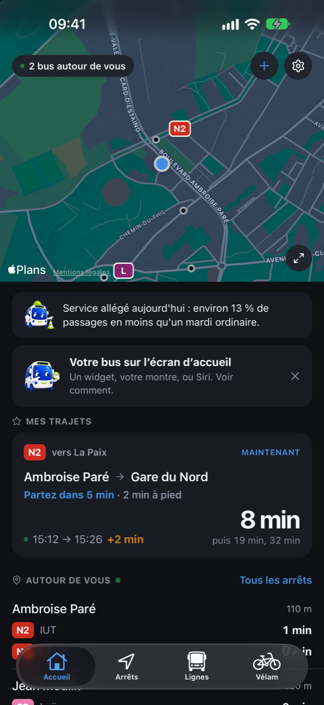
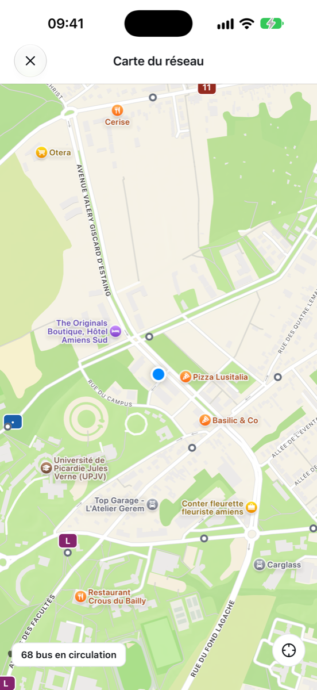
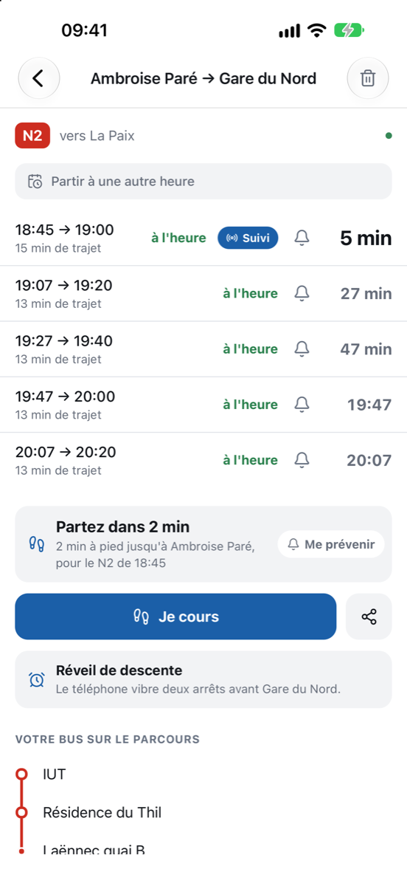
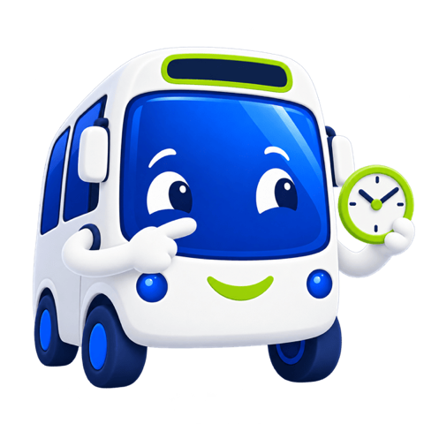
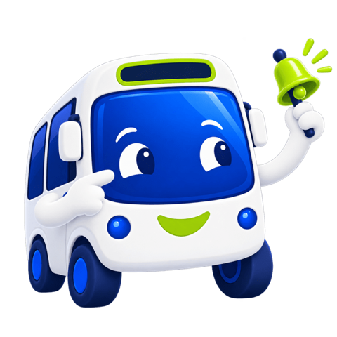
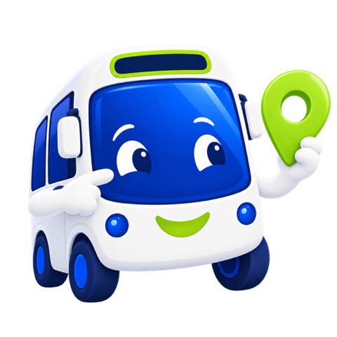
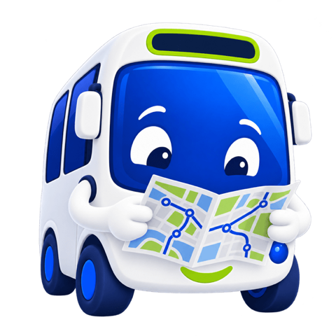
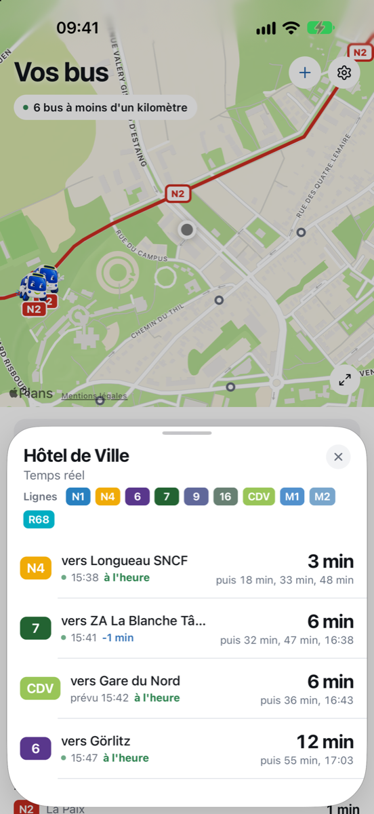

Réveil de descente
Vous lisez, vous somnolez, vous avez des écouteurs : le téléphone vibre deux arrêts avant le vôtre, puis au dernier. Il suit le bus, écran éteint.
Tout débloquéAmiens - Bus & Vélam, sur iPhone et Apple Watch
Les horaires en temps réel, la carte en direct avec chaque bus qui roule, et Picou qui vous dit quand partir.
Gratuit pour l'essentiel. Sans compte, sans publicité, sans traqueur.

Chaque bus d'Amiens, représenté par Picou, avance sur la carte en temps réel. Vos lignes tracées dans leur couleur, vos arrêts encadrés. Un tap, et la carte prend tout l'écran.

Le réseau publie la position des bus toutes les quinze secondes. L'app les fait rouler entre deux, à leur vitesse, le long de leur ligne. On regarde un bus qui avance, pas un point qui saute.
Touchez un arrêt : ses lignes, ses prochains passages, sans quitter la carte.
Les apps de transport donnent l'heure du bus. Celle-ci donne l'heure à laquelle fermer la porte.

L'app sait où vous êtes, où est votre arrêt et quand passe votre bus. Elle compte le temps de marche, à votre allure, et vous dit quand partir. Une alerte sonne à l'heure de partir, pas à l'heure du bus.
Si le prochain est trop juste, elle vise le suivant. Et le dit.
Vous lisez, vous somnolez, vous avez des écouteurs : le téléphone vibre deux arrêts avant le vôtre, puis au dernier. Il suit le bus, écran éteint.
Tout débloqué
Le compte à rebours de votre bus, dans l'île dynamique et sur l'écran verrouillé. Il démarre tout seul à l'heure de votre trajet habituel.
Tout débloqué
Prévenu avant le bus, aux jours et aux heures que vous choisissez. Une seule alerte par plage, jamais quarante.
Tout débloqué
Votre prochain bus sur l'écran d'accueil, l'écran verrouillé, en mode En veille sur la table de nuit, et dans le Centre de contrôle. Un bouton pour le sens retour.
Tout débloquéLe prochain bus au poignet, jusque sur le cadran. Sans sortir le téléphone sous la pluie.
Tout débloqué
Enregistrez le trajet que vous faites souvent. À chaque ouverture, le prochain départ dans votre sens, l'heure d'arrivée, et la correspondance s'il en faut une.
GratuitUn tableau d'horaires n'a pas d'âme. Picou, si.
Quand partir, s'il va pleuvoir avant votre bus, l'heure du dernier ce soir, le retard du jour, le dimanche où les bus sont rares. Écrit comme un ami d'Amiens, pas comme un panneau.
Il a un nom, que vous pouvez changer. Et si vous lui donnez votre prénom, il vous dit bonjour avec.
Il sait quand vous avez vraiment pris le bus, et il le fête. Le dimanche soir, il vous raconte votre semaine en bus.
« Bonjour Nadir. Votre N2 passe à 7:52, partez dans 10 min. Vous avez le temps d'un café. »7 h 36, un mardi
« Averse vers 8:10. Votre N2 passe avant, vous rentrez sec. »Quand il va pleuvoir
« Dernier N2 à 23:40. Après, c'est le taxi ou la marche. »Tard le soir
Dès l'ouverture, les arrêts les plus proches et leurs prochains bus. Les horaires tiennent dans le téléphone : ils restent lisibles sans réseau. Internet ne sert qu'aux retards.

Les 416 arrêts du réseau, les 42 lignes, les correspondances. Et les stations Vélam, avec les vélos et les places disponibles, pour le jour où le bus est loin.
Pas d'abonnement. Pas de publicité. Un seul paiement, à vie, pour ce qui rend le bus plus doux.
Gratuit, pour toujours
0 €
Tout ce qu'il faut pour prendre le bus.
Tout débloqué, à vie
3,99 € une seule fois
14 jours offerts pour tout essayer.
Il n'y a pas de serveur. Pas de compte. Rien à collecter, donc rien de collecté.
0
Ni inscription, ni identifiant. Vous ouvrez, ça marche.
0
Aucune mesure d'audience, aucune publicité, rien de vendu à personne.
0
Votre position sert à classer les arrêts et à vous dire quand partir. Elle reste dans le téléphone.
Des données ouvertes publiées par Amiens Métropole sur transport.data.gouv.fr, sous Licence Ouverte 2.0 : horaires, lignes, arrêts, positions des bus et retards. L'application les affiche fidèlement. Elle n'est ni éditée, ni approuvée par Ametis, Keolis ou Amiens Métropole.
Les horaires, les lignes et les arrêts sont dans le téléphone. Sans réseau, ils restent consultables. Seuls les retards et les positions des bus demandent une connexion.
Non, jamais. Les horaires, le temps réel, la carte, les arrêts, les lignes et Vélam sont gratuits pour toujours. Le paiement unique de 3,99 € ne porte que sur le confort : partez à l'heure, réveil, widgets, montre, alertes.
Elle mesure la distance jusqu'à votre arrêt, compte le détour des rues et votre allure (réglable), garde une minute de marge, et compare au prochain bus que vous pouvez attraper. Si le premier est trop juste, elle vise le suivant.
Seulement quand vous l'activez, pour ce trajet, et il s'éteint seul à l'arrivée. L'indicateur bleu d'iOS reste visible pendant qu'il suit le bus. Rien n'est enregistré ni transmis.
iPhone avec iOS 15.1 ou plus récent. Les widgets interactifs et le Centre de contrôle demandent iOS 17 et 18. Apple Watch avec watchOS 9 ou plus récent.